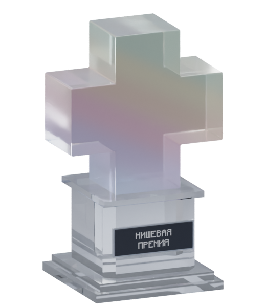

Номинации
Главная номинация
Андеграунд года
- Недооткрытие года
- Нишевый стиляга года
- Нишевый музыкант года
- Нишевый ютубер года
- Нишевый разработчик года
- Нишевый тиктокер года
- Нишевый художник года
- Локальный человек-мем года
- 0 просмотров года
- Недопроект года
Голосование
Выбери до четырёх номинаций. Любой голос можно отменить.
0 из 4
Загружаем голоса…
Войти через Telegram